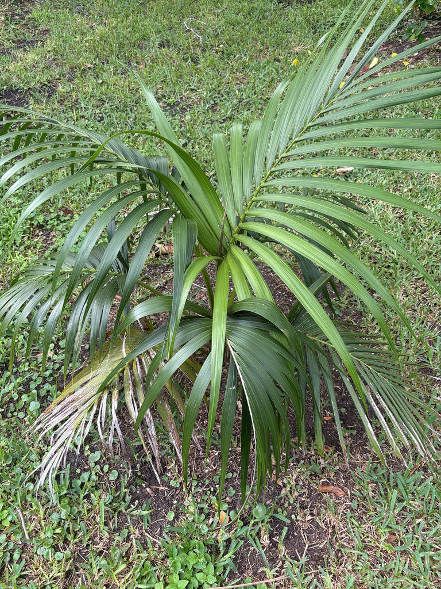

- Kentia Palms became enormously fashionable in Victorian interiors — one of the defining palms of the Victorian parlour — and that status carried them into some of the grandest spaces on earth, including the Palm Court of the RMS Titanic, where potted Kentias lined the first-class retreat.
- Many Kentia Palms sold as potted specimens are actually several seedlings planted together in one container — two to five individuals sharing a pot to create a fuller, bushier look. The single graceful specimen you imagine is often a cluster.
- The Kentia and its island neighbor, the Belmore Sentry Palm (Howea belmoreana), evolved into two distinct species on the same tiny island without geographic separation — a textbook case of sympatric speciation, driven by a flowering-time gap of about seven weeks that keeps the two from interbreeding.
- The seeds develop exceptionally slowly — fruit takes years to mature on the tree — and because Lord Howe Island strictly controls how many can be harvested each year, a single affordable potted Kentia represents a surprisingly long chain of patience and regulation.
The Kentia Palm is endemic to Lord Howe Island, a subtropical island roughly 600 kilometers east of mainland Australia in the Tasman Sea. It is found nowhere else on Earth in the wild, growing in lowland coastal forests and sandy flats from sea level to the lower hillsides.
Lord Howe Island was unknown to Europeans until 1788, and seed exports did not begin until the 1870s. Once they did, demand moved fast: by the end of the 19th century the Kentia was the definitive parlour palm of Victorian Europe and North America, present in grand hotels, conservatories, and aristocratic drawing rooms across the continent.
That trade, now tightly controlled by the Lord Howe Island Board through permits and annual quotas, continues to this day.
In Florida, the palm grows as an ornamental introduction. UF/IFAS notes it is better suited to coastal California than to South Florida's high heat and humidity, but established specimens do grow here, particularly when sited in shade or partial shade.
- The two Howea species on Lord Howe Island — the Kentia and the smaller Belmore Sentry Palm — are a textbook case of sympatric speciation: two species that diverged from a common ancestor without ever being geographically separated.
- One of the best-studied differences between the two species is flowering time: the Kentia generally flowers several weeks before the Belmore, and flowering timing appears to vary with habitat and soil. The difference may help maintain the species boundary despite the palms growing side by side on an island smaller than ten square miles.
- The name Howea honors Lord Howe Island itself. The species epithet forsteriana commemorates Johann Reinhold Forster and his son Georg Forster, the naturalists who sailed with Captain James Cook on his second Pacific voyage from 1772 to 1775 — a fitting tribute, since their Pacific collections laid important groundwork for understanding the region's botany.
- The Kentia was first formally described in 1870 as Kentia forsteriana by Ferdinand von Mueller, based on specimens collected from the island. In 1877 the Italian botanist Odoardo Beccari recognized enough distinct traits to place it in its own genus, Howea — but the old trade name Kentia stuck, and commercial growers have used it ever since.
- On Lord Howe Island the IUCN lists the Kentia Palm as Vulnerable. Ironically, the species' global popularity may help protect it: the strictly regulated seed harvest gives the island community a strong economic incentive to keep wild populations healthy, and the export program is subject to annual quotas and oversight.
In its native Lord Howe Island forest, the Kentia Palm provides shelter and fruit for the island's wildlife. The dull-red, egg-shaped fruits, borne on female trees — the species is monoecious, with male and female flowers on the same individual — are taken by birds.
In Florida cultivation, wildlife value is limited; as a non-native palm with no co-evolutionary history with local fauna, it does not serve as a larval host for Florida butterflies or moths.
The interfoliar inflorescences may attract generalist pollinating insects when the palm is in bloom, but no specialist relationship has been documented. Visitors looking for the park's strongest pollinator and butterfly habitat will find it among the native plantings.
Propagation is by seed only. The palm is monoecious — male and female flowers are produced on the same inflorescence. Seeds are notoriously slow to germinate and require careful handling; the fruits take several years to fully mature on the tree.
Flowers are small and not individually showy, creamy white in color. Inflorescences are produced below the leaves on stalks roughly 3.5 feet long, with male and female flowers occurring on the same inflorescence. In Florida, flowering typically occurs in November and December.
Dull reddish-brown, egg-shaped drupes about 1.5 inches long, pointed at each end. A tree must reach approximately 15 years of age before it fruits. The fruits are not considered edible.
Pinnate (feather-shaped), arching, and gracefully drooping — up to 10 to 12 feet long, with up to 90 slender, dark green leaflets hanging in a relaxed curve from the rachis. Petioles are 3 to 5 feet long and unarmed — no spines or teeth. The crown typically holds up to three dozen fronds, giving the palm its characteristic airy silhouette.
Slender and solitary, 5 to 6 inches in diameter. The trunk is dark green when young and turns tan to brown as it ages and is exposed to sunlight. It is cleanly ringed with the scars of shed fronds, giving it an attractively textured appearance.
The first thing to notice is the crown: long, arching fronds with leaflets that droop softly downward rather than sticking out stiffly — giving the whole palm a relaxed, elegant look quite different from stiffer fan palms nearby. Follow the fronds down to the slender, ringed trunk — those rings are the scars of old fronds that have dropped cleanly away over the years.
Look below the crown for flower stalks roughly 3.5 feet long emerging below the leaves when the palm is in season, typically in late fall. If the palm has fruited, look for dull reddish-brown, pointed oval fruits clustered on the stalks — their presence means the tree is around 15 years old or more.
The ASPCA lists Howea forsteriana as non-toxic to dogs, cats, and horses. The fruit is not a food source but is not known to be toxic. This is a straightforwardly harmless palm — no spines, no irritating sap, no hazard to people or pets.
UF/IFAS explicitly notes that the Kentia Palm prefers coastal southern California to South Florida or Hawaii, finding the combination of high heat, humidity, and rainfall less than ideal. At Bradenton it does best in a shadier, more sheltered spot — a condition Palma Sola Botanical Park can provide.
UF/IFAS's South Florida palm guide rates the Kentia as short-lived in Florida — a useful reminder that cold-hardiness to Zone 9b does not guarantee a long or easy life here. The specimen growing at Palma Sola is somewhat unusual, and seeing it outdoors gives visitors a chance to appreciate how large this familiar houseplant can actually become.
In the nursery and interiorscape trade, the Kentia Palm is widely regarded as one of the most durable and elegant indoor palms available — tolerant of low light, air conditioning, and irregular watering to a degree few other palms can match.


- © Randall Carter (CC-BY-NC), via iNaturalist